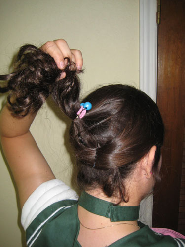
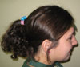
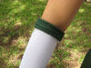
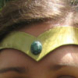
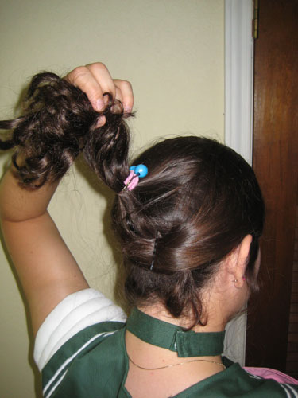
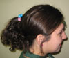
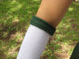
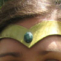

Ember Costumes
Tutorials and Resources
Sailor Jupiter Hairstyle with Tiara
This tutorial should be able to help anyone trying to figure out how to attach their Sailor Tiara to their head or their wig.
Remember, any hairstyle tutorial can work just as easily (sometimes more easily!) on a wig.
This picture shows the front part right and front part left.
The front part left and front part right are taken from the entire forward section of the head.
Clip the front parts out of the way and tie up the main ponytail section of hair ito a high ponytail, then slip the elastic back of the tiara around the back of your head--it looks like a mess, but we're going to cover up that mess in just a second! This is a good place to take a few little wisps of hair out to be in front of the ears, also.
Next, comb and smooth the lower ponytail section up and over the elastic band and add it to the ponytail. You can use another hair elastic, but I chose to use the little bauble ties that Sailor Jupiter has in her hair.
Now smooth one of the front parted sections down and over the side of the elastic, and pin it under the ponytail where the ends will be out of site. Smooth down the other front parted section over the other side of the elastic, pin it under the ponytail, and.... 
Done! Use hair spray/gel to keep it in place, or if you're not happy with it...start over and try again!

 Sailor Jupiter Hairdo with tiara
 Sailor Jupiter's Shoes
Sailor Jupiter's Shoes
 Sailor Gloves
 Sailor Leotard
Sailor Leotard
 Sailor Fuku
Sailor Fuku
 Sailor Tiara
 Sailor Bows
Sailor Bows
 Sailor Skirt
Sailor Skirt
Back to Costume Gallery
Back to Sailor Jupiter Costume
Step One: Consult Reference Image and Make a Plan
I like to have my reference image handy and think of what exactly I'm going to do. I can see from this picture that Sailor Jupiter has her hair sorta parted into side bangs, a little curly wisp in front of each ear, and a high curly ponytail. I'm not going to cut my bangs for this costume, but I can get it close enough without too much effort. (This is actually partly why I picked Sailor Jupiter!)Step Two: Section off hair
I've decided that my hair needs to be sectioned into four parts: The front part right, front part left, main ponytail, and lower ponytail.This picture shows the front part right and front part left.
The front part left and front part right are taken from the entire forward section of the head.
Clip the front parts out of the way and tie up the main ponytail section of hair ito a high ponytail, then slip the elastic back of the tiara around the back of your head--it looks like a mess, but we're going to cover up that mess in just a second! This is a good place to take a few little wisps of hair out to be in front of the ears, also.
Next, comb and smooth the lower ponytail section up and over the elastic band and add it to the ponytail. You can use another hair elastic, but I chose to use the little bauble ties that Sailor Jupiter has in her hair.
Now smooth one of the front parted sections down and over the side of the elastic, and pin it under the ponytail where the ends will be out of site. Smooth down the other front parted section over the other side of the elastic, pin it under the ponytail, and.... 
Done! Use hair spray/gel to keep it in place, or if you're not happy with it...start over and try again!
Costume Details and Tutorials
 Sailor Jupiter Hairdo with tiara
Sailor Jupiter's Shoes
 Sailor Gloves
Sailor Leotard
Sailor Fuku
 Sailor Tiara
Sailor Bows
Sailor Skirt
Back to Costume Gallery
Back to Sailor Jupiter Costume